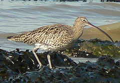
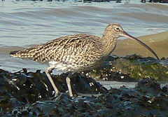

| Eurasian Curlew | |
|---|---|
|  | |
| Conservation status | |
| Binomial name | |
| Numenius arquata (Linnaeus, 1758) |
| Eurasian Curlew | |
|---|---|
|  | |
| Conservation status | |
| Binomial name | |
| Numenius arquata (Linnaeus, 1758) |
The Eurasian Curlew, Numenius arquata, is a wader in the large family Scolopacidae. It is the one of the most widespread of the curlews, breeding across temperate Europe and Asia. In Europe, this species is often referred to just as "the Curlew", and in Scotland a colloquial name is "whaup".
The largest wader in its range, at 50–57 cm length, and a 1 m wingspan. It is mainly greyish brown, with a white back, and a very long curved bill. Males and females look identical, but the bill is longest in the adult female. It is generally not possible to recognize the sex of a single Eurasian Curlew, or even several ones as there is much variation; telling male and female of a mated pair apart is usually possible however.
The familiar call, from which this bird gets it name, is a loud curloo-oo.
The only similar species over most of the Curlew's range is the Whimbrel (N. phaeopus). This is smaller, and has a shorter bill with a kink rather than a smooth curve. Flying birds may resemble a Bar-tailed Godwit (Limosa lapponica) in winter plumage, but that species is smaller, has a slightly upturned bill, and its feet are barely longer than the tail tip; in the Eurasian Curlew the feet are longer, forming a conspicuous "point".
This is a migratory species over most of its range, wintering in Africa, southern Europe and south Asia. Occasionally, a vagrant individual reaches places far away from its normal range, such as Nova Scotia[1] or the Marianas.[2] It is present all year in the milder climate of Ireland, Great Britain and the adjacent European coasts.
It is generally wary. Highly gregarious outside the breeding season, the Eurasian Curlew feeds by probing soft mud for small invertebrates, but will also pick small crabs and earthworms off the surface if the opportunity arises.
The nest is a bare scrape on taiga, meadow or similar habitat. 3-6 eggs are laid in April/May, and incubated for about a month to hatching.
This is one of the species to which the Agreement on the Conservation of African-Eurasian Migratory Waterbirds (AEWA) applies.
Formerly classified as a species of Least Concern by the IUCN, it was suspected to be rarer than generally assumed. Following the evaluation of its population size, this was found to be incorrect, and it is consequently uplisted to Near Threatened status in 2008; though it is still a rather common bird, its numbers are noticeably declining.[3] In Ireland, for example, the breeding population is estimated to have declined by 80% in the last 30 years.

{kind=link}
{kind=link}
{kind=link}